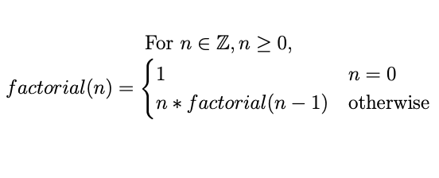

Organization and Access
All computer languages are ways to organize your communication and thinking. In this, they are very similar to spoken languages. Each spoken language, or family of spoken languages, does this organization differently. English sentences often have a structure of Subject-Helper Verb-Verb-Predicate...The boy will bite the dog, for example. German, a language closely related to English, organizes things differently. Sometimes German sentences have a Subject-Helper Verb-Predicate-Verb structure... Ich werde das Buch bald lesen, which if translated word-by-word is "I will the book soon read." Spanish has adjectives after the nouns they modify.
While each language has its own organizational rules, these rules all do the same thing. They allow us to organize and express our thinking.
Functions - a fundamental organization concept of Erlang
Python and Erlang, being related languages, both have functions as a fundimental organizational structure. In Erlang this organization is so strong a principle that you can't put code in a file unless it is a function or in a function.
When you truly begin thinking in Erlang, you will be thinking in functions. You will think of how functions are related to each other. You will have thoughts along these lines, "If this function calls that one..." You will be able to do this since you will eventually realize that when you are designing solutions in Erlang, how a function accomplishes something is not as important as that it will, and that you can wait to figure out how to complete the function later.
Modules - organizing functions in Erlang
Like Python, Erlang uses modules as a way to organize your functions. Unlike Python, Erlang allows you to make it possible to make some of your functions unavailable to programmers who are not working in the module itself. This allows you to have 'helper functions' to do the heavy lifting and functions that are easier to call that others can use. When you get to 'thinking in functions,' you won't care how a function you call accomplishes its task, just that it does. The reality is that, in Erlang, you must explicitly tell a module which functions other programmers are allowed to use.
Here is an example module. This module is found in a source code file named funcs.erl. Erlang, like Python, requires the module name to be the name of the file in which it resides.
-module(funcs).
2 -export([print_parts/1,factorial/1,double/1]).
The first line is a function call that declares the atom that is the name of the module, funcs.
The second line is a function call, -export, that is passed a list of functions that are made available
for use outside of the funcs module. Each entry in the export list consists of two parts,
1)the atom that is the name of the function to export, and 2) the number of parameters that function has.
These two parts are always seperated by the / character. Just so you understand, the use of
/ here does NOT indicate division.
In the code snippet above, a module called funcs is declared. Three functions, print_parts, factorial, and double are made available for use outside the module. This is the module's API.
Using Functions
In Python and Erlang there are similarities and differences between the languages regarding how you declare functions. Unlike Python's use of def, Erlang requires no keyword to identify a function. Also, Erlang uses either snake_case or camelCase for function names. In this class, we'll use snake_case. For example, a function that averages two numbers could be defined like this.
average_two_numbers(First, Second) -> (First + Second) div 2.
Lets break down the syntax into English. "There is a function named average_two_numbers. It has two parameters, First and Second. The body of the function sums the First and Second variables, and then the sum is divided by 2 using integer division."
It is very important to notice that EVERY function ends with a '.' just like every English sentence. Also, the -> operator indicates the code to execute, the 'body' of the function.
Single line functions are nice, but not everything should be done using single line functions. As a simple example, here is some code to print out the head and the tail of a list on seperate lines in the REPL. Yes, there are better ways to perform this behavior. That isn't the point of this code snippet. The point is to see what multi-line functions look like syntax-wise.
print_parts([H|T]) ->
io:format("Head: ~p~n",[H]),
io:format("Tail: ~p~n",[T]).
Just as before, the code to be executed bounded by the -> and . operators. All of the other lines end with the , operator. This is, once again, similar to English punctuation rules. In English, all sentances end with a period, and any independent clauses in the sentance that are joined by a coordinating conjunction (and, but, or, etc.) end in a comma. Here is a simple English sentence that illustrates this punctuation rule.
The dog barked, and the wolf howled.
Notice that this could have been written as, "The dog barked. The wolf howled." The two clauses are independent since they are gramatically correct when written seperately. The Erlang example, above, follows this English punctuation rule. The body of the function has two independent functions. They are combined together using the , operator and an implied and. "Print the head, and print the tail." The concept and punctuation/grammar rules of combining dependent clauses in some spoken languages drove the selection of this syntactical choice for Erlang. Why reinvent the wheel?
Be warned and forewarned! The above function as written has a major problem. The problem is this, what if the list is empty? How then can the head be split from the tail? It can't. If you put the above function in a module file, compile the module, and then call the function using an empty list, you will get this error message.
** exception error: no function clause matching funcs:print_parts([])
This error is mysterious until greater knowledge and understanding is gained. There is something missing from the function as it was declared. But don't worry, the fix is easy and applies a variation of the Erlang pattern matching concept from week 02's reading. Here is the code snippet in it's fixed form.
print_parts([])->
io:format("Empty List");
print_parts([H|T]) ->
io:format("Head: ~p~n",[H]),
io:format("Tail: ~p~n",[T]).
At first it may seem that the fix creates two functions but it does not. Notice that the end of the body for the fist use of print_parts does NOT end in a period. That's why the first use of print_parts can NOT be a function all by itself. Instead of a period, the body of the first use of print_parts ends in a semicolon. The print_parts function starts with the first use of print_parts and ends with a period. The print_parts function consists of two dependent clauses seperated by a semicolon. Once again, Erlang is following the grammar/punctuation rules for depented clauses of some spoken languages.
When the print_parts function is called, Erlang uses pattern matching to decide which clause of the function will execute. That's why, in the code above, if the print_parts function is called and passed an empty list, the first clause is used and executed. If print_parts is called and passed a non-empty list, the second clause of print_parts matches the use of the function and the second clause is used and executed. Now the error message you saw before the fix was made,
** exception error: no function clause matching funcs:print_parts([])
starts to make sense. It says, "Error: I tried to find a clause for the print_parts function that matches the pattern funcs:print_parts([]) but couldn't. Did you forget to add one or did you use the wrong parameters?"
When you are adding clauses to a function, it is important that you order the independent clauses you are adding. No matter how many independent clauses there are in your function, order them from most to least restrictive. Otherwise you will get unexpected behavior when you use the function. You will see an example of this soon.
Why This Design for Functions?
By having function independent clauses and using pattern matching to determine which of those clauses is used makes it possible to 'think in functions' as was mentioned at the top of this page. In other languages that don't take this approach to functions, you usually have to have some sort of 'if' behavior inside the function to do the pattern matching by hand. Because of the way Erlang uses pattern matching, no such conditional branching is needed, and the programmer using the function has to know LESS about how the function works internally than they would in some other languages.
While this distinction may not seem a big deal to you right now, when you start creating more complicated reality-like applications with millions of lines of code, this distinction becomes very important. Think of how many 'if' type lines of code you don't have to create in Erlang compared to other languages if your application consists of hundreds of thousands of functions. Also remember that any new code you write, including these 'if' type lines of code, are green-code. In other words, they will have bugs in them. So, with Erlang, you write less code which leads, always, to fewer bugs created.
There is another benefit, amoung many others that you will see, of this clause/pattern matching approach to functions. Take a look at how the factorial behavior from mathematics can be written using two clauses, one when the function is passed 0, and the other when it is passed a non-zero value.
factorial(0) -> 1;
factorial(N) -> N * factorial(N-1).
Notice how there are no 'if' type constructs in the code just like is described above. Also notice that this is a recursive function! Because of Erlang's clause/pattern matching approach to functions, you don't EVER need loops. In fact, there are no loop constructs in Erlang. You just don't need them.
There are some false beliefs about Erlang running around the internet. One of them is that you should always use tail-recursion in Erlang. Not so. First of all, tail-recursion isn't always faster. Another myth is that if you don't use tail-recursion, you'll end up having a stack overflow happen at runtime. Not so. Erlang is desgned so that you will run out of RAM instead of getting a stack overflow. These statements don't mean you can ignore tail-recursion, it just means you don't have to go through contortions to make all your functions tail-recursive. I like this statement by Fred Herbert . "Writing clean code generally leads to better performance. This is something that many languages can not claim as true, but Erlang certainly can. In the general case, the optimisations in the Erlang VM come from observing idiomatic code in production, and clean [code] at that. This is why body recursion might be better, and why many other optimizations were made...Clean code is the best code."
The point he is making is that sometimes, in Erlang, body-recursive functions, those that are non-tail-recusive, can sometimes be better. So what would the factorial function look like if it was written using tail-recursion? Like this.
factorial(N)->factorial(N,1).
factorial(0,Accum)-> Accum;
factorial(N,Accum)-> factorial(N-1,Accum*N).
Notice that there are two functions here, both named factorial. One of them has a single paramter. The other has two parameters. I've seperated them by a blank line of code so they are easier to see as being distinct. The factorial(N) function is the only one that should be exported from the module -export([factorial/1]). That way people using the module don't have to think about how you are doing factorial, just that it works. (Thinking in functions!!)
The biggest question, however, is this. Is the extra code in the tail recursive version of factorial worth the effort of writing, debugging, and maintaining it? I ran a few simple tests on my machine (6 core i5 32Gb RAM under MacOS) and found the answer to the question is 'maybe'. The test consisted of running each version of factorial 8 times using the time:tc/3 function. Then the results for each of the two sets of 8 runs were averaged. Tests like this are indicative, not conclusive. For the body-recursive version of factorial, the average time required to calculate 1000! was 435 microseconds. For the tail-recursive version, the average time was 483 microseconds.
So for this case on this machine, the tail-recursive version was slower. Significantly slower? Probably not. That probably depends on many things. There may be a difference when N gets bigger. I'd suggest you play around by performing this kind of test with larger values of N. What are the results for 10,000! or 1,000,000! on your machine?
Interesting Info:
Another great result of Erlang's being a functional programming language and functional programming languages' affinity with Mathematics is the
similarity between the Erlang version of multi-part functions and how you describe them in Mathematics. Take a look and compare the Erlang body-recusive
version of factorial with the mathematical version of factorial you see here.
Such a close match! Again, why reinvent the wheel? The Erlang creators tried very hard to not add unnecessary stuff on top of what you already know
in order to write code.
Guards, Guards!
In the factorial example, above, it was very important to get the order of the function's clauses correct so that the function would execute as expected. This can be problematic when you have functions containing many clauses or when the pattern matching isn't as simple as factorial. Erlang's solution to these problems is called a guard. The keyword for a guard is when. Here is a code snippet example of a factorial function that not only uses guards, but adds another clause so if factorial is called with a negative number, a situation which is undefined in Mathematics, the function retuns an atom representing a failure.
factorial(N) when N > 0 -> N * factorial(N-1);
factorial(N) when N == 0 -> 1;
factorial(N) when N < 0 -> undefined.%Factorials of negative integers are not defined. Therefore return the atom undefined.
By using guards, the order of our independent clauses is irrelevant, freeing us from a potential ordering bugs. It does cost us in a little more code, but in most cases, the extra text is worth it, especially when your guards need to be more complicated than this simplistic example.
What would the tail-recursive version of factorial look like using guards? Like this.
factorial(N)->factorial(N,1).
factorial(N,Accum) when N > 0 -> factorial(N-1,Accum*N);
factorial(N,Accum) when N == 0 -> Accum;
factorial(N,_accum) when N < 0 -> undefined.%Factorials of negative integers are not defined. Therefore return the atom undefined.
Interesting Info:
Wait a minute! Shouldn't the mathimatical version of the factorial function have some guards too? Great question. I'm glad you asked. 😄 It
absolutely should! The previous mathematical version has the guards in it that match the guards for the body recursive function. We just need to
add one more to deal with negative numbers. In Mathematics, the way you do this is to limit the types of numbers n can be BEFORE the function is
described. That way everybody knows what can be used as input. In this example, n is limited to be an integer that is greater-than zero.

Recursion and Lists
A list comprehension like those you saw last week are a better way to do this upcoming example. You'll also see some other better ways in a bit, but let's take a look at how to build a new list that is the numbers in a list multiplied by 2. In the code snippet below you see a function called double. Notice that in this case we don't need to worry about the order of the clauses since there is no way for the pattern matcher to fail. That is also why no guards are needed. Eiter a list has elements and matches the first clause, or the list is empty and matches the last clause. Those are the only two options.
double([H|T]) ->
[2 * H | double(T)];
double([]) ->
[].
Also notice the use of the cons operator, [H|T], to split the list passed to the function into the head of the list and the tail, the rest of the numbers in the list. The Head is then multiplied by 2 and the cons operator is used again to prepend the result to whatever is returned from calling the double function on the remaining tail numbers.
This way, each time double gets called, the list it is passed gets smaller by one number until the list is empty. Then, after getting to the end of the list, each doubled number is prepended to a new list, last number first, until the doubled values are all included, first number last (Doctrine and Covenants 29:30).
Put the double function, above, in a file as part of a module, compile the module in the REPL, and run it. Then play around with it. What happens if you print out the values of H and T? Try out a few other changes you dream up. This exploration process should help you understand the list disassembly-reassembly precess that is a major part of writing Erlang code.
The Better Way; Map, Filter, and Reduce
In Erlang, as in most languages, it is important not to write code that duplicates fundamental parts of the standard language library. Think about the list functions you saw last week. Did you wonder when you saw the code examplelists:seq(1,100).where the lists:seq/2 function came from? It's a built in part of the lists module that is part of the standard library. Lists have many helpful helper methods that we can and should use. Please visit that link and familiarize yourself with the list. Only a few are covered in this here.
While it would be possible to write a recursive function in Erlang to average, modify, or select some elements of an array, you should not. Instead you should use the built-in map (convert all), filter/2 (select some), foldl/3 (left-to-right), or foldr/3 (right-to-left) functions. The foldl/3 and foldr/3 functions are Erlang's way of doing the what is called reduce in other languages. Use them to average, sum, get the product product, etc. of lists.
Consider a situation where you have been hired to write code for a social media site. You have been asked to write code to count up the total number of 'likes' postings that a single customer has recieved. Existing code that others have written puts a likes count for each posting in an list in a variable called Like_counts for you.
Suppose you were told to filter out all the like counts that are less then 10. How should this be done?
Like this.
Filtered_likes = lists:filter(fun(X) -> X >= 10 end,Like_counts).
}
Let's break this up so you can see how it is done. The filter function has two parameters. The first is a Lambda function like you learned about in Python, and the second is the list to filter.
Lambda's in Erlang are called funs because you define one using the keyword fun. The lists:filter/2 function expects a fun that has one parameter. In this example, it's called X. As in the Python filter function, this X will be each element of the list in order. This fun consists of a single line that returns true or false depending on if the specific element of the list in question is greater-than or equal to 10. The end keyword then declares the fun is complete.
On the other hand, maybe you have been asked to give the customer five 'bonus likes' that are to be added to each posting.
How should the likes in the list be used to crete this new list?
Like this.
Adjusted_likes = lists:map(fun(X) -> X+5 end,Like_counts).
Maybe you are asked to total the customers likes. How should you do that?
You would usually use the foldl/3 function. It has three parameters, the first is a fun with two paramters, the second is the accumulator's initial value, 0 in the example below since addition is being done. This initial value is used, modified, and returned to accumulate the final result. In this case the the final result is the summation of the likes. The third parameter is the list to reduce.
Total_likes = lists:foldl(fun(X,Accumulator)-> Accumulator + X end, 0, Like_counts).
What if you are to give five bonus likes only for those that already have 10 likes and then sum the result (filter, then map, then reduce)? You could first use lists:filter/2 followed by lists:map/2 and then use lists:foldl/3, or, since these functions return a list, you could embed the call to lists:filter/2 inside the call to lists:map/1 and then embed the call to lists:map/1 into a call to lists:foldl/3. This would be a mistake. Instead, since there is no lists BIF to do this precise sequence of manipulations, you should use a list comprehension like this.
Big_likes = [X+5 || X <- Like_counts, X >= 10].
On the other hand, maybe you have been asked to give five bonus likes to everyone and then sum the result. In this case, you wouldn't want to use a list comprehension. There is a BIF for this case already. Remember, don't re-invent the wheel. The BIF is lists:mapfoldl/3. You would use it like this.
{Big_likes, Total_likes} = lists:mapfoldl(fun(X,Accumulator)->{X+5, Accumulator + X+5} end, 0, Like_counts).
Notice that mapfoldl/3 returns two values as part of a tuple. The first part is the list of updated like counts. The second value is the the sum of the updated likes. If all you want in the result is the total, you should tell Erlang not to bother returning the Big_likes list. You would do that like this.
{_Big_likes, Total_likes} = lists:mapfoldl(fun(X,Accumulator)->{X+5, Accumulator + X+5} end, 0, Like_counts).
Notice the _ operator IN FRONT of the Big_likes variable name. Any time an atom or varible name begins with _, you are telling Erlang you don't want that value and to please ignore it.
If you would like a simple review of Erlang functions, here is one of many on the web..